Cơm hến ngon nhất chỉ có ở Huế. Cơm hến tuy là món ăn dân dã có khắp mọi nơi dù ở thôn xóm hay đường quê, nghèo mà vẫn sang, đậm đà hương vị. Cơm hến được làm từ cơm trắng nấu chín và để nguội. Người ta cho phần thịt hến cùng các phụ gia, thêm tóp mỡ được chiên giòn. Cơm hến có thêm chút mắm ruốc Huế vừa bùi, chát, cay và hăng. Được ăn kèm với phụ gia là rau sống gồm có: rau sống, bắp chuối, giá đỗ và ít thân khoai môn trắng thái nhỏ. Lạc được rang vàng và phi dầu vàng cho có màu đẹp mắt.
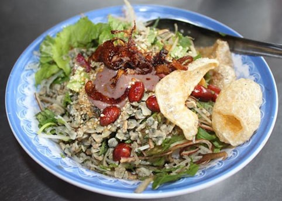Cơm hến ngon nhất là ở cồn Hến, hoặc quán chị Nhỏ, bán trong ngõ đường Phạm Hồng Thái, góc giao với Trương Định – nhưng chỉ bán buổi sáng, đến trưa là hết, hoặc không thì ăn ở số 2 Trương Định. Cơm hến khá rẻ, một tô chỉ khoảng 10.000 đồng.
Nằm trên đường Đào Duy Anh, ở cuối một con hẻm nhỏ có một quán bánh canh không bảng hiệu. Quán hoạt động theo lối gia đình ít nhân công nên khách thường phải đợi hơi lâu, vì thế quán được khách quen gọi là quán bà Đợi. (người Huế quen gọi là mụ Đợi). Dù bánh canh của quán này được thái sợi dẹt như kiểu Quảng Bình chứ không nén khuôn sợi tròn, nhưng nước dùng thì đặc phong cách Huế.
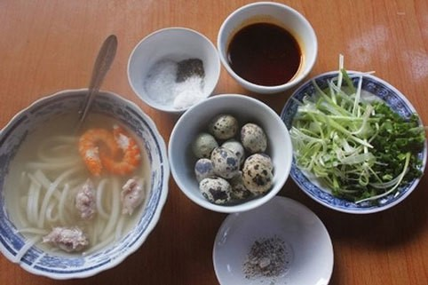Nước dùng của quán này có vị đậm đà và thơm tự nhiên của tôm. Khi tô bánh canh được bưng ra, nước trong, chả và tôm tươi giòn sần sật, thực khách sẽ gia thêm tiêu, muối, chanh, tương ớt dầu và hành lá thái nhỏ bầy sẵn trên bàn, mặc dù tự nước dùng trong tô đã đủ ngon vị lắm rồi... Vì vậy mà hiếm khi khách bỏ sót nước dùng trong tô bánh canh ở quán bà Đợi.
Ông bà ta ngày xưa thường nói nếu ngoài Hà Nội có “36 phố phường” thì Huế cũng có “36 thứ chè”. Không ai biết chè hẻm có ở Huế từ bao giờ mà chỉ biết gọi là thế, bởi nó thường nằm sâu trong các ngõ ngách với rất nhiều loại chè khác nhau.
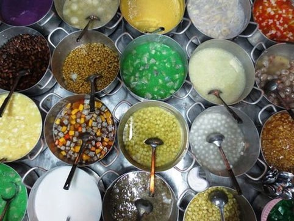Mỗi loại chè có một hương vị riêng, ngon bổ, tinh tế và cầu kỳ như chính con người nơi đây. Chè bắp ngọt mát tinh khiết, vừa thơm vừa bùi nấu từ bắp ngô non của cồn Hến, chè hạt sen với thứ hương trầm thật lạ của giống sen hồ Tịnh Tâm – loại sen “tiến vua”. Lại còn chè nhãn bọc hạt sen ngọt thanh, thơm bùi và nhiều loại chè như chè hạt lựu, chè trôi nước, chè khoai sọ, chè bột lọc…
Có một loại chè nghe rất lạ tai mà chỉ Huế mới có: chè bột lọc thịt heo quay. Được chế biến cầu kỳ từ những miếng thịt heo quay cắt khúc nhỏ, bọc ngoài là bột nếp, cho thêm đường nấu thành chè. Khi ăn, món chè này cho ta một cảm giác rất lạ, vừa ngọt lại vừa mặn, béo ngậy khó diễn tả thành lời…
Nếu bạn muốn có một bữa ăn thanh đạm và để cơ thể được thanh lọc thì hãy thử một bữa cơm chay tại Huế. Các món chay cũng rất đa dạng và phong phú, chỉ từ rau, củ, nấm, đậu phụ… nhưng bạn đã có một bữa cơm đầy đủ và thịnh soạn vô cùng.
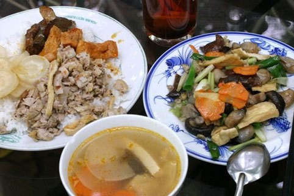Khách đến Huế, nếu thích được thưởng thức một bữa cơm chay thì ngoài những Phật tử biết nấu cơm chay ngon để mời thân mật ở gia đình, có thể liên hệ các chùa để thưởng thức một bữa cơm chay Huế đặc biệt. Bạn đến chùa nào cũng được, nhưng tốt hơn cả là chùa Từ Đàm, vì ở đây là chùa sư nữ nên có nhiều ni cô nấu cơm chay ngon, lại ở ngay trong thành phố - trên đường Điện Biên Phủ.
Bún bò Huế chính là linh hồn của ẩm thực Huế, độ ngon và nổi tiếng của món ăn này chắc không phải bàn nhiều. Bún bò Huế có một miếng chân giò, một miếng giò tự nắm, một miếng tiết lợn nhỏ và tất nhiên phải có vài lát thịt bò. Rau ăn kèm cũng rất tươi và phong phú. Địa chỉ ăn bún bò Huế nổi tiếng nhất: 13 Lý Thường Kiệt (cạnh Nhà khách Công đoàn). Ngoài ra, khắp nơi ở Huế bạn cũng sẽ dễ dàng tìm thấy một quán bún bò chất lượng. Giá một tô bún bò Huế khoảng 30.000 đồng.
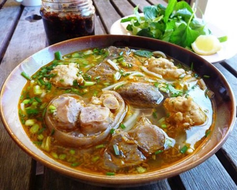Nếu bạn đang tìm đặc sản Huế để làm quà nhưng ngại vận chuyển đồ tươi sống, mắm cáy sẽ là sự lựa chọn lý tưởng nhất.
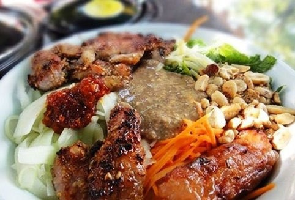Các quán bánh ướt thịt nướng và bún thịt nướng ngon nằm trên mạn Kim Long – đường đi chùa Thiên Mụ
Có dịp đến Huế, mới thấy bánh bèo gắn bó với đời sống sinh hoạt của người dân cố đô như thế nào. Khoảng từ 3 đến 5 giờ chiều, trên các ngõ phố, những phụ nữ quẩy gánh trên vai hoặc chiếc thúng nhỏ cắp ngang hông, đi bán bánh bèo, bánh lọc đến từng nhà. Người Huế rất thích và đã thành thói quen dùng loại bánh đầy hương vị quê nhà này vào các bữa ăn phụ.
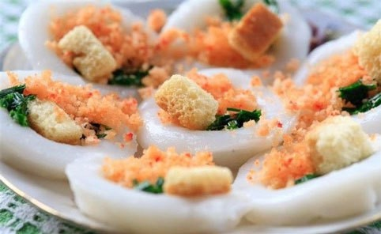Các bạn có thể đến các “Khu phố Bánh bèo” như: cung An Định, đường Ngự Bình, đường Nguyễn Bỉnh Khiêm... để tận mắt thưởng thức “văn hóa bánh bèo” tại đây.
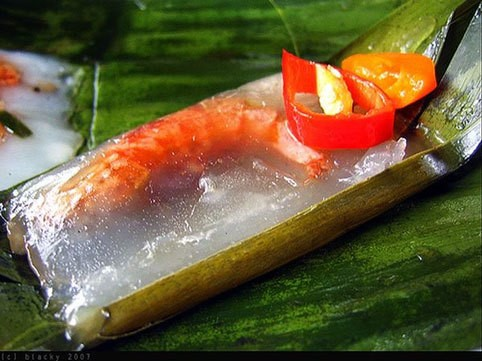Bánh khoái đổ bằng bột gạo xay đánh sệt với nước và lòng đỏ trứng, sau đó thêm tiêu, hành, mắm, muối, tôm bóc vỏ, thịt bò (hoặc chim) nướng thái lát, mỡ thái lát nhỏ, giá sống. Bánh ngon một phần nhờ nước lèo, thứ nước chấm chỉ các đầu bếp giỏi mới chế được. Ðây là bí quyết gia truyền, quyết định chất lượng, tạo nên hương vị thượng hạng của bánh khoái.
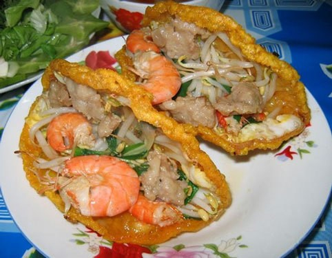Bánh khoái nổi tiếng nhất là bánh khoái Thượng Tứ, quán có 3 chi nhánh là Lạc Thiện, Lạc Thạnh và Bạch Yến.
Đây là món ăn nổi tiếng ở Huế và có xuất xứ từ con phố Nhật Lệ trong thành Nội, nơi tập trung hàng chục lò làm bánh. Bánh thơm dẻo, ăn rất khoái khẩu do sự kết hợp nhuần nhuyễn mùi vị giữa nhân đậu, thịt (mỡ và nạc) với gạo nếp và các loại gia vị như tiêu, hành. Người ăn quen lâu ngày thành nghiện, thành thèm.
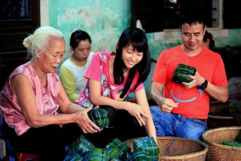Ăn bánh chưng Nhật Lệ khi nguội ngon hơn khi nóng. Bóc lớp lá chuối ra, màu bánh xanh thơm nhức mắt. Cắn một miếng, nhân đậu thịt mỡ màu nâu trắng béo bùi ngập chân răng.
Nhiều người thường nói “Nem lụi là một trong những món ăn đặc sệt Huế”’. Ở đường Nguyễn Huệ có hai quán nem lụi. Suốt ngày đêm quán nào cũng chật ních người ăn. Khách hàng lần đầu ăn nem lụi, ai cũng xuýt xoa khen ngon để rồi ăn tiếp lần hai, lần ba, thậm chí ăn hàng ngày như dân “nghiện" và lần nào cũng vẫn cứ khen ngon.
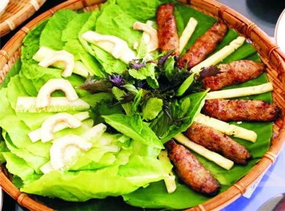Khi ăn, lấy bánh đa nem gói thịt viên nướng cùng với rau, thơm, khế, giá, lát chuối xanh thái mỏng, miếng vả thái sống, ớt màu... lấy lá hành buộc lại rồi chấm với một thứ nước đặc biệt gọi là nước lèo. Nước lèo dùng cho nem lụi được pha chế từ hàng chục nguyên liệu khác nhau như dầu thực vật, gan lợn, bột đao, đường, tương nước mắm, quế chi, hoa hổi trộn với nước cốt dừa.